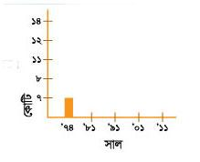

অধ্যায় ১৩
বাংলাদেশের জনসংখ্যা
১ বাংলাদেশের জনসংখ্যা বৃদ্ধির ধারা
|
সাল |
মোট জনসংখ্যা |
|
১৯৭৪ |
৭ কোটি ৬৪ লক্ষ |
|
১৯৮১ |
৮ কোটি ৯৯ লক্ষ |
|
১৯৯১ |
১১ কোটি ১৪ লক্ষ |
|
২০০১ |
১২ কোটি ৯৩ লক্ষ |
|
২০১১ |
১৪ কোটি ৯৭ লক্ষ |
জনসংখ্যা বৃদ্ধি
বিভিন্ন সময়ের আদমশুমারি থেকে নেওয়া বাংলদেশের জনসংখ্যা সম্পর্কিত ছকটি লক্ষ কর। বাংলাদেশের জনসংখ্যা ৩৭ বছরে প্রায় দ্বিগুণ হয়ে গেছে। সর্বশেষ হিসেব অনুযায়ী বছরে ১.২% হারে জনসংখ্যা বৃদ্ধি পাচ্ছে। এই বৃদ্ধির হার ১৯৭০ সালের থেকে কম। সেই সময় জনসংখ্যা বৃদ্ধির হার ছিল ৩%। দেখা যাচ্ছে জনসংখ্যা বৃদ্ধির হার কমেছে। তা সত্ত্বেও অতীতে বাংলাদেশের জনসংখ্যা বেশি বৃদ্ধি পাওয়ায় আয়তনের তুলনায় তা অনেক বেশি।
জনসংখ্যার ঘনত্ব
একটি দেশে প্রতি বর্গকিলোমিটারে যতজন লোক বাস করেন, তাকে জনসংখ্যার ঘনত্ব বলে। যেহেতু আমাদের দেশের আয়তনের কোনো পরিবর্তন হচ্ছে না তাই সময়ের সাথে জনসংখ্যার ঘনত্ব বেড়ে চলেছে। ২০১১ সালে যেখানে জনসংখ্যার ঘনত্ব ছিল প্রতি বর্গকিলোমিটারে ১০১৫ জন।
জনসংখ্যার ঘনত্বের দিক থেকে বাংলাদেশের অবস্থান বিশ্বে এগারতম। সিঙ্গাপুরের অবস্থান তৃতীয় এবং হংকং চতুর্থ। প্রতিবেশি রাষ্ট্র ভারত আছে তেত্রিশতম স্থানে এবং পাকিস্তানের অবস্থান ছাপ্পান্নতম।
অতিরিক্ত জনসংখ্যার কুফল
অতিরিক্ত জনসংখ্যার কারণে আমাদের প্রতিনিয়ত বিভিন্ন সমস্যায় পড়তে হয়। যেমন :
-
মানুষ কাজ পায় না
-
প্রয়োজনীয় খাবার পাওয়া যায় না
-
অনেকে সন্তানদের বিদ্যালয়ে পাঠাতে পারেন না
-
চিকিৎসা সেবা পায় না
-
সমাজে অপরাধ বেড়ে যায়
-
পরিবেশ দূষিত হয়।
ক। এসো বলি
শিক্ষকের সহায়তায় শ্রেণিতে অতিরিক্ত জনসংখ্যার প্রভাব নিয়ে আলোচনা কর:
-
সাধারণত একটি পরিবারে কতজন সদস্য থাকে?
-
পরিবহনের উপর কী ধরনের প্রভাব পড়ে?
-
বাসস্থানের উপর কী প্রভাব পড়ে?
-
মানুষ কী পরিবেশকে পরিস্কার পরিচ্ছন্ন রাখতে পারে?
খ। এসো লিখি
অতিরিক্ত জনসংখ্যার প্রভাব কেমন হতে পারে তার একটি তালিকা তৈরি কর কাজটি জোড়ায় কর।
|
কাজে |
- |
|
খাবারে |
- |
|
শিক্ষায় |
- |
|
স্বাস্থ্যে |
- |
|
পরিবেশে |
- |
গ। আরও কিছু করি
জনসংখ্যার বৃদ্ধি নিয়ে একটি গ্রাফ তৈরি কর।

ঘ। যাচাই করি
সংখ্যা দিয়ে শূণ্যস্থান পূরণ কর:
২০১১ সালে বাংলাদেশের মোট জনসংখ্যা ছিল ……………………………………… ..।
বর্তমানে প্রতি বর্গকিলোমিটারে বাংলাদেশের জনসংখ্যা ………………………………… .।
জনসংখ্যা বৃদ্ধির বার্ষিক হার ………………………………………………………………।
আমরা বিশ্বে …………………………………………………………… তম জনবহুল দেশ।
৬৮২ জনসংখ্যা বৃদ্ধির কারণ
বাংলদেশের জনসংখ্যা নানা কারণে বৃদ্ধি পাচ্ছে। জনসংখ্যা বৃদ্ধির প্রধান চারটি কারণ হলো:
|
সামাজিক | ||
|
ধর্মীয়----> |
বাংলাদেশের জনসংখ্যা বৃদ্ধির কারণ |
<----অর্থনৈতিক |
|
স্বাস্থ্য |
সামাজিক কারণ:
বাংলদেশের জনসংখ্যা দ্রুত বৃদ্ধি পাওয়ার পেছনে বিভিন্ন সামাজিক কারণ রয়েছে। যেমন- শিক্ষার অভাব, বাল্য বিবাহ, বহু বিবাহ, কুসংস্কার, ছেলে সন্তান লাভের আশা ইত্যাদি।
বাংলাদেশের জনসংখ্যার প্রায় অর্ধেক নারী। আর তাদের অধিকাংশ আয়মূলক কাজে জড়িত নন। ফলে ছেলেমেয়ে লালন-পালনেই তাদের বেশি সময় ব্যয় করতে হয়।
অনেক মা-বাবা মনে করেন, অধিক সন্তান থাকলে বৃদ্ধ বয়সে তাদের দেখাশোনা করবে। তাই তারা বেশি সন্তান নেন।
অর্থনৈতিক কারণ :
বাংলদেশের অর্থনীতি কৃষিনির্ভর। আর কৃষিকাজে লোকবল বেশি প্রয়োজন হয়। এ কাজ করার জন্য সবাই ছেলে সন্তান চায় কারণ। ছেলেরাই কৃষিকাজ করে পরিবারের জন্য আয় করে থাকেন। আবার বৃদ্ধ বয়সে মা-বাবা ছেলে সন্তানের উপর বেশি নির্ভর করে।
ধর্মীয় কারণ :
অনেক মানুষ বিশ্বাস করেন সৃষ্টিকর্তা যেহেতু আমাদের সৃষ্টি করেছেন, তিনি খাবারের ব্যবস্থাও করে রেখেছেন। ফলে তারা অধিক সন্তান জন্ম দেওযার বাস্তব সমস্যাগুলোর কথা ভাবেন না।
স্বাস্থ্যগত কারণ :
চিকিৎসাবিজ্ঞানের উন্নতিতে বাংলাদেশের মৃত্যুহার এখন অনেক কমে এসেছে।
জনসংখ্যা বৃদ্ধির হার কমানোর ক্ষেত্রে নারীর ভূমিকা অনেক বেশি গুরুত্বপূর্ণ। মেয়েদের যথাযথ শিক্ষা থাকলে তার তাদের পরিবারের জন্য অর্থ উপার্জনের কাজ করতেন। শিক্ষা ও ভালো উপার্জন তাদের জীবনযাত্রার মান সম্পর্কে সচেতন করত। ফরে পরিবার ছোট রাখা সম্ভব হতো।
৬৯ক। এসো বলি
অতিরিক্ত জনসংখ্যা বৃদ্ধির ফলে যে সমস্যাগুলো হয় তা সমাধানের কয়েকটি উপায় নিচে দেওয়া আছে। এগুলোর মধ্যে কোনটি সবচেয়ে গুরুত্বপূর্ণ বলে মনে কর গুরুত্বের ভিত্তিতে ক্রমানুসারে সমাধানগুলো সাজাও। শিক্ষকের সহায়তায় আলোচনার মাধ্যমে কাজটি কর।
-
উন্নত চিকিৎসা সেবা
-
ছোট পরিবার
-
সন্তানদের যথাযথ শিক্ষা
-
নারীদের উপার্জনমূলক কাজে অংশগ্রহণ
খ। এসো লিখি
নিচের শিরোনামে অতিরিক্ত জনসংখ্যার কারণগুলোর তালিকা তৈরি কর:
|
সামাজিক |
- |
|
অর্থনৈতিক |
- |
|
ধর্মীয় |
- |
|
স্বাস্থ্যগত |
- |
গ। আরও কিছু করি
জনসংখ্যা বৃদ্ধি সম্পর্কে সচেতন করতে টেলিভিশনে একটি নতুন ধরনের অনুষ্ঠানের পরিকল্পনা কর। যে বিষয়গুলো লক্ষ রাখতে হবে:
-
অনুষ্ঠানে আমন্ত্রিত অতিথি কারা থাকবেন?
-
কী কী দৃশ্য থাকতে পারে?
-
কী বার্তা তুমি দিতে চাও?
ঘ। যাচাই করি
সংক্ষেপে উত্তর দাও:
তোমার মতে বাংলাদেশের জনসংখ্যা বৃদ্ধির মূল কারণ কোনটি?
৭০